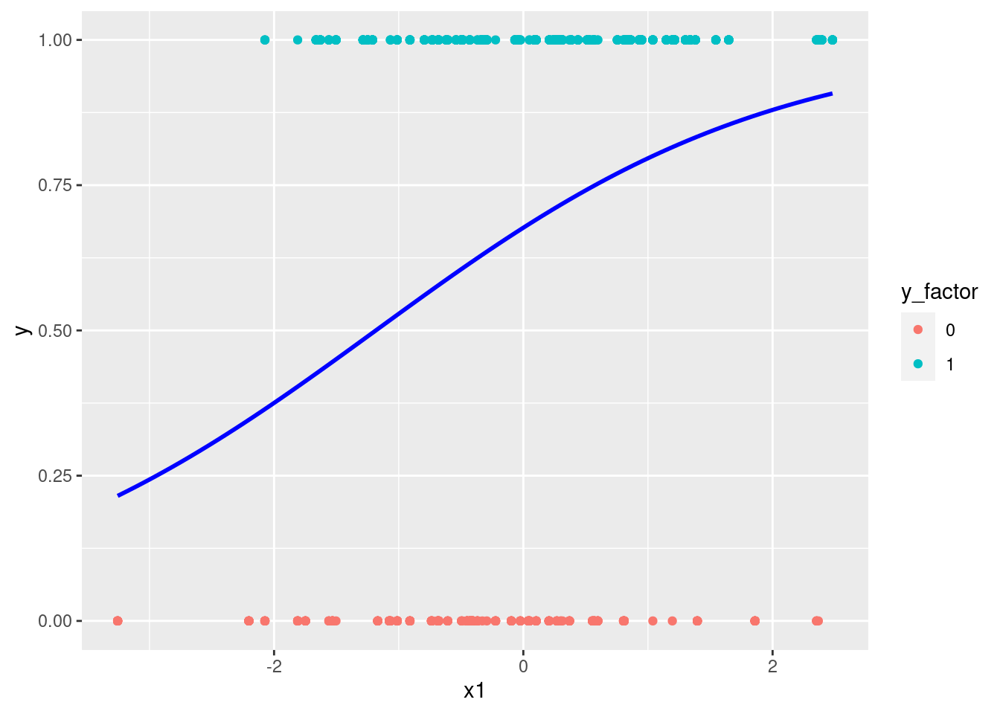

7 Logistic回归
7.1 相关概念
- 因变量(Dependent variable,Y)：类别变量；
- 自变量(Independent variable,X)：连续型变量或离散型变量；
- 二分类分类模型:邮件分类（好邮件，垃圾邮件）；疾病诊断（是否得Covid-19)等。
7.2 Logistic模型
odds: \(odds=\frac{p(x)}{1-p(x)}\)
sigmoid函数：\(y=\frac{1}{1+e^{-z}}\)
library(ggplot2)
x <- seq(-10,10,0.01)
sigmoid <- function(x){
1/(1+exp(-x))
}
y <- sigmoid(x)
df_sig <- data.frame(x=x,y=y)
#plot(x,sigmoid(x),col="blue")
ggplot(data=df_sig,aes(x=x,y=y))+
geom_line(color="blue")+
annotate("text",x=2,y=0.3,parse=TRUE,
label="frac(1,1+e^{-z})")+
labs(title=expression(paste("sigmoid funtion ",sigma(z)==frac(1,1+e^{-z}))))+
geom_hline(aes(yintercept=0.5),color="red",linetype="dashed")
- logistic回归模型：是解决分类的机器学习算法，主要解决二分类的问题。因变量的估计值由条件概率和决策边界决定。\[p(y)=p(y=k|X=x)=\frac{1}{1+e^{-X\beta}}\]
7.3 模型估计
7.3.1 损失函数(Loss function)
\[L(\hat{y},y)=-(y*log(\hat{y})+(1-y)*log(1-\hat{y}))\] ### 代价函数(Cost funtion)
\[J(\theta)=-\frac{1}{m}\sum\limits_{i=1}^mL(\hat{y}^{(i)}-y^{(i)})\]
7.3.2 模型估计(estimation)
梯度下降（Gradient Descent）的方法。
\[\theta_j:=\theta_j-\alpha\frac{\partial}{\partial \theta_j}J(\theta)\]
7.3.3 模拟数据模型
library(ggplot2)
# faked data produce
set.seed(520)
x1 <- rnorm(100,0,1)
x2 <- rnorm(100,0,1)
z <- 3+2*x1+5*x2
pr <- 1/(1+exp(-z))
y <- rbinom(1000,1,pr)
data_logreg <- data.frame(y=y,x1=x1,x2=x2)
data_logreg$y_factor <- as.factor(data_logreg$y)
head(data_logreg)## y x1 x2 y_factor
## 1 0 -1.07545511 -0.7586247 0
## 2 1 -1.28608682 0.7911798 1
## 3 1 -1.21028388 0.7932912 1
## 4 1 0.08780203 -0.1222843 1
## 5 1 -0.48698853 0.6076338 1
## 6 1 2.39494281 -0.9934082 1
# visualize data
ggplot(data_logreg,aes(x=x1,y=y,color=y_factor))+
geom_point()+
stat_smooth(method="glm",color="blue",se=FALSE,method.args=list(family=binomial))## `geom_smooth()` using formula 'y ~ x'
# model estimate
log_fit <- glm(y_factor~x1+x2,family = binomial(link="logit"),data=data_logreg)
summary(log_fit)##
## Call:
## glm(formula = y_factor ~ x1 + x2, family = binomial(link = "logit"),
## data = data_logreg)
##
## Deviance Residuals:
## Min 1Q Median 3Q Max
## -3.5699 -0.0877 0.0247 0.1788 3.1761
##
## Coefficients:
## Estimate Std. Error z value Pr(>|z|)
## (Intercept) 3.3905 0.2848 11.90 <2e-16 ***
## x1 2.1482 0.1878 11.44 <2e-16 ***
## x2 5.7433 0.4348 13.21 <2e-16 ***
## ---
## Signif. codes: 0 '***' 0.001 '**' 0.01 '*' 0.05 '.' 0.1 ' ' 1
##
## (Dispersion parameter for binomial family taken to be 1)
##
## Null deviance: 1276.69 on 999 degrees of freedom
## Residual deviance: 377.26 on 997 degrees of freedom
## AIC: 383.26
##
## Number of Fisher Scoring iterations: 7## Loading required package: lattice## 1 2 3 4 5 6
## 0.03637469 0.99435703 0.99525852 0.94668772 0.99708267 0.94427164
# use caret to calculate the confusion matrix
data_logreg$pre_glm <- ifelse(pdata>0.5,"1","0")
data_logreg$pre_glm <- as.factor(data_logreg$pre_glm)
head(data_logreg)## y x1 x2 y_factor pre_glm
## 1 0 -1.07545511 -0.7586247 0 0
## 2 1 -1.28608682 0.7911798 1 1
## 3 1 -1.21028388 0.7932912 1 1
## 4 1 0.08780203 -0.1222843 1 1
## 5 1 -0.48698853 0.6076338 1 1
## 6 1 2.39494281 -0.9934082 1 1
confusionMatrix(factor(data_logreg$y),factor(data_logreg$pre_glm))## Confusion Matrix and Statistics
##
## Reference
## Prediction 0 1
## 0 295 41
## 1 35 629
##
## Accuracy : 0.924
## 95% CI : (0.9058, 0.9397)
## No Information Rate : 0.67
## P-Value [Acc > NIR] : <2e-16
##
## Kappa : 0.8289
##
## Mcnemar's Test P-Value : 0.5663
##
## Sensitivity : 0.8939
## Specificity : 0.9388
## Pos Pred Value : 0.8780
## Neg Pred Value : 0.9473
## Prevalence : 0.3300
## Detection Rate : 0.2950
## Detection Prevalence : 0.3360
## Balanced Accuracy : 0.9164
##
## 'Positive' Class : 0
##
# plot ROC
#install("ROCR")
library(ROCR)
pred <- prediction(pdata,data_logreg$y_factor)
perf <- performance(pred,measure="tpr",x.measure="fpr")
plot(perf,col=rainbow(2),main="ROC curve admissions",xlab="Specificity",ylab="Sensitivity")
abline(0,1) # add a 45 degree line
7.3.4 Logistic回归实例模型
- Produce a simple data
# Create a hand-out data
df_logsim <- data.frame(x1=c(8,3,4,5,9),x2=c(6,5,9,8,9),y=factor(c(1,0,0,1,1)))
head(df_logsim)## x1 x2 y
## 1 8 6 1
## 2 3 5 0
## 3 4 9 0
## 4 5 8 1
## 5 9 9 1
# visual the data
library(ggplot2)
ggplot(data=df_logsim,aes(x=x1,y=x2,color=y,shape=y,size=3))+
geom_point()